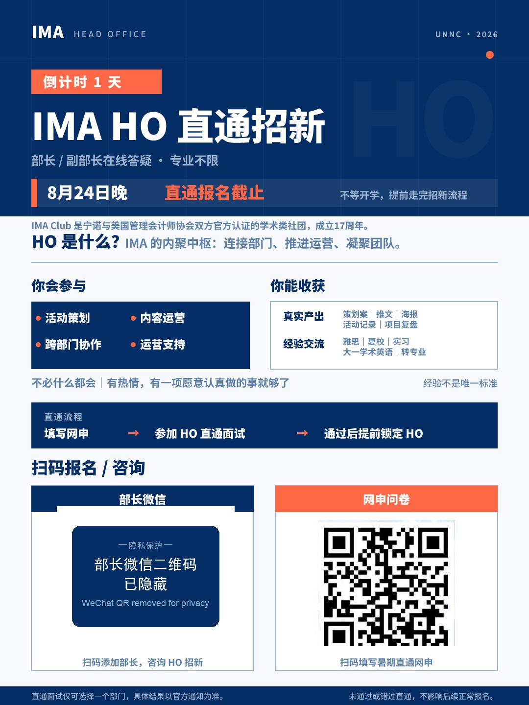

XINJIE ZHANG
XINJIE ZHANG IMA HO 招新物料IMA HO Recruitment Materials 1 张海报 · 2 篇笔记1 poster · 2 posts
为 IMA（美国管理会计师协会）UNNC Student Chapter 内聚部（HO）2026 暑期直通招新做的一组物料：一张「直通招新」信息海报，加两篇小红书倒计时笔记。由我确定内容结构和要求、指挥 AI 生成，并逐项核对。 A small set of materials for the summer fast-track recruitment of the Head Office (HO) at IMA’s UNNC Student Chapter: one information poster and two Xiaohongshu countdown posts. I set the content structure and brief, directed AI to generate the visuals, and checked every detail.
为什么做Why I made it
HO 暑期直通招新需要一套信息清楚、风格统一的物料，面向校内学生，讲清楚「HO 是什么」「直通流程」和「怎么报名」。 The fast-track recruitment needed clear, consistent materials for students on campus, explaining what HO is, how the fast-track process works and how to sign up.
我做了什么What I did
根据招新目标和 HO 的职责范围，设计海报的信息结构（倒计时、HO 介绍、参与内容与收获、直通流程、扫码报名）和两篇小红书笔记的文案重点；参考社团官方风格，指挥 AI 生成视觉，再逐页核对文案、角色名称（部长 / 副部长）、直通流程、报名方式、Logo 位置、字号与留白。 From the recruitment goal and HO’s actual remit I designed the poster’s information structure (countdown, what HO is, what members do and gain, the fast-track steps, sign-up) and the key messages for the two countdown posts. Referencing the chapter’s official style, I directed AI to generate the visuals, then checked every page for copy, role names (Head / Vice Head), the fast-track steps, the sign-up method, logo placement, type size and spacing.
AI 帮了什么How AI helped
AI 按我的结构和要求生成海报与笔记的视觉草案。 AI generated the draft visuals for the poster and posts from my structure and brief.
我负责的判断What I decided
逐处核对信息是否与招新口径一致，并决定最终采用哪一版。海报里「部长微信」是第三方个人联系方式，作品集版本已隐去；「网申问卷」二维码指向已截止的表单，保留原样。 I checked each detail against the recruitment brief and decided which version to keep. The “Head’s WeChat” code on the poster is someone else’s personal contact, so it is masked in the portfolio copy; the application-form code points to a closed form and is left as it was.
